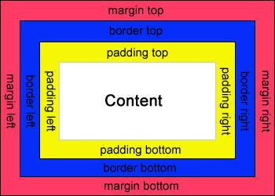

面试知识点 - css
CSS
CSS 属于表示层，负责如何显示有关内容。
CSS 学习推荐
4.2 CSS reset
在工作的过程中，会发现各式各样的浏览器对某个标签有自己独特的样式。
但是在前端开发中，如果不采用统一标准，那么会产生千奇百怪的 bug。所以为了减少后期 bug 的出现，前端开发人员会重置一遍 CSS 样式，尽可能地使开发的网页在各个浏览器相差不大。
CSS 盒模型
在工作的过程中，也许小伙伴需要 div 块的总宽度为 100px，然后发现总是被 margin 撑高，这是因为盒模型定义的问题：
CSS 中有个属性叫 box-sizing。
box-sizing: border-box
box-sizing: content-box
border-box中，整个div的宽、高，包括margin、padding、border。content-box中，整个div的宽、高，则不包括上面元素。

如上图，如果一个 div ，你的代码如下：
div {
box-sizing: border-box;
margin: 10px;
width: 100px;
height: 100px;
padding: 10px;
}
那么，你的整个宽高还是 100px。
但是，如果你的代码如下：
div {
box-sizing: content-box;
margin: 10px;
width: 100px;
height: 100px;
padding: 10px;
}
那么，你的整个盒子宽高是 120px。
如果你在设计页面中，发现内容区被撑爆了，那么，请检查下现在的 border-box 是什么，最好在引用 reset.css 的时候，就对 border-box 进行统一设置，方便管理。